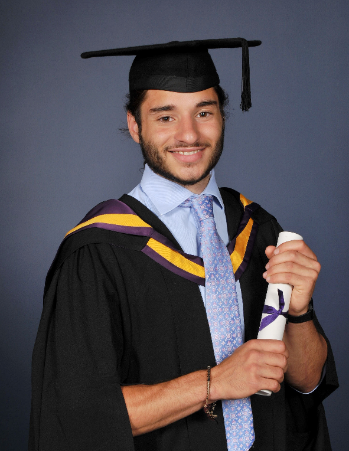

<!DOCTYPE html>
<html>
<head>
	<meta charset=”utf-8”> 
	<title>David Adler</title>
    <!-- Bootstrap core CSS -->
    <link href="style/css/cyborg-bootstrap.min.css" rel="stylesheet">
    <link href="style/css/font-awesome.min.css" rel="stylesheet">
 	<link href="style/img/favicon.ico" rel="shortcut icon" type="image/vnd.microsoft.icon" />
 	<meta name="viewport" content="user-scalable=no, initial-scale=1, maximum-scale=1, minimum-scale=1, width=320, height=device-height, target-densitydpi=medium-dpi" />

    <!-- HTML5 shim and Respond.js IE8 support of HTML5 elements and media queries -->
    <!--[if lt IE 9]>
      <script src="https://oss.maxcdn.com/libs/html5shiv/3.7.0/html5shiv.js"></script>
      <script src="https://oss.maxcdn.com/libs/respond.js/1.3.0/respond.min.js"></script>
    <![endif]-->

</head>
<body> 
<script src="http://localhost:12345/livereload.js"></script>
	<script type="text/x-handlebars" id="application">
    <div id="navbar" class="navbar navbar-default navbar-static-top" role="navigation">
      <div class="container">
        <div class="navbar-header">
          <button type="button" class="navbar-toggle" data-toggle="collapse" data-target=".navbar-collapse">
            <span class="sr-only">Toggle navigation</span>
            <span class="icon-bar"></span>
            <span class="icon-bar"></span>
            <span class="icon-bar"></span>
          </button>
          <a class="navbar-brand" href="/">David Adler</a>
        </div>
        <div class="navbar-collapse collapse">
          <ul class="nav navbar-nav">
            <li class="nav-blog active">{{#link-to "posts"}}Blog{{/link-to}}</li>
            <li class="nav-cv dropdown">
              <a href="#" class="dropdown-toggle" data-toggle="dropdown">CV <b class="caret"></b></a>
              <ul class="dropdown-menu">
                <li><a href="http://davidadler.me">Interactive</a></li>
                <li><a href="http://davidadler.me/static/files/cv.pdf">PDF</a></li>
                <li class="divider"></li>
                <li>
                	{{#link-to "cv.pt"}}
                		<div class="dropdown-flag-container">
					    
						</div>
                		Português
            		{{/link-to}}
            	</li>
              </ul>
            </li>
            <li class="nav-about"> {{#link-to "about"}}About{{/link-to}}</li>
            <li class="nav-contact"> <a href="http://davidadlersapp.appspot.com/#contact">Contact</a></li>
          </ul>
          <form class="navbar-form navbar-right" role="form">
            <div class="form-group">
              <input type="text" placeholder="Email" class="form-control">
            </div>
            <div class="form-group">
              <input type="password" placeholder="Password" class="form-control">
            </div>
            <button type="submit" class="btn btn-success">Sign in</button>
          </form>
        </div><!--/.nav-collapse -->
      </div>
    </div>
			 {{outlet}}
</div>

	 </script>

	 <script type="text/x-handlebars" id="index">
		{{#link-to "posts"}} Go to the posts page {{/link-to}}
	</script>

	 <script type="text/x-handlebars" id="posts">
    	<link href="style/css/style.css" rel="stylesheet">
	 <div class="container">
		{{#link-to "posts.create" class="create-btn"}} Add post {{/link-to}}
		<div>Posts: {{postsCount}}</div>
		<table class="table table-striped table-bordered table-hover"><tbody>
			<tr>
				<th>id</th>
				<th>Title</th>
				<th>Created</th>
				<th>Modified</th>
			</tr>
			{{#each post in controller}}
				<tr>
					<td>
						{{post.id}}
					</td>
					<td>
						{{#link-to "post" post}}
							{{post.title}}
						{{/link-to}}
					</td>
					<td>
						{{formatDate post.dateCreated}}
					</td>
					<td>
						{{formatDate post.dateModified}}
					</td>
				{{else}}
					<td>no posts… :-( </td>
				</tr>
			{{/each}}
		</tbody></table>
		<hr>
		<div class="container">
			<div class="row">
				{{outlet}}
			</div>
		</div>
	</div>
	 </script>

	<script type="text/x-handlebars" id="post">
		{{#if deleteMode}}
			<div class="modal fade" id="myModal" tabindex="-1" role="dialog" aria-labelledby="myModalLabel" aria-hidden="true">
			  <div class="modal-dialog">
			    <div class="modal-content">
			      <div class="modal-header">
			        <h4 class="modal-title">Really?</h4>
			      </div>
			      <div class="modal-body">
			        <p>Permanently delete record?</p>
			      </div>
			      <div class="modal-footer">
						<button data-dismiss="modal" class="btn btn-danger" {{action "confirmDelete"}}> yes </button>
						<button data-dismiss="modal" class="btn btn-default" {{action "cancelDelete"}}> no </button>
			      </div>
			    </div>
			  </div>
			</div>
		{{/if}}

		<div class="post-container col-md-12">

			 <div class="post-profile">
				<button class="btn btn-default" {{action "edit"}}>Edit</button>
				<button data-toggle="modal" data-target="#myModal"  class="btn btn-danger" {{action "delete"}}>Delete</button>

				 <h1>{{title}}</h1>
				 <article>{{formatMarkdown article}}</article>
				 <hr>
				 <span>Created {{formatDate dateCreated}},</span>
				 <span>modified {{formatDate dateModified}}.</span>
			</div>
		</div>

		{{outlet}}
	</script>

	<script type="text/x-handlebars" id="post/edit">
		<div class="col-md-6">
			<button class="btn btn-success"{{action "save"}}> ok </button>
			<div class="post-edit">
				 <h2>Post title</h2>
				 {{input class="form-control" value=title}}<br>
				 <h2>Post content</h2>
				 {{textarea name="editor" value=article}}<br>
				 <div id="editor"></div>
				 <br>
			</div>
		</div>

	</script>


  <script type="text/x-handlebars" id="cv/en">
  </script>

  <script type="text/x-handlebars" data-template-name="cv/pt" id="cv/pt">
  	<link rel="stylesheet" href="/style/css/cv.css">
  	<link rel="stylesheet" href="/style/css/lightbox.css">
	<aside class="hidden-print hidden-sm hidden-xs" style="float:left; margin-left: 20px;" >
		<a class="btn btn-default" href="#" onclick="javascript:alert('Please make sure all margins are removed for printing!');window.print();">Imprimir</a>
	</aside>
  	<section class="container container-cv">

			<!-- Header -->
			<header class="row">
				<div class="title col-md-8 col-sm-8">
					<a class="" data-lightbox="me" title="Graduation day" href="/style/img/me/grad-profile.png"></a>
				    <a class="hidden" data-lightbox="me" title="Prospectus photo" href="/style/img/me/prospectus.jpg"></a>
				    <a class="hidden" data-lightbox="me" title="Another prospectus photo, mid jump on a slackline" href="/style/img/me/prospectus-jump.jpg"></a>
				    <a class="hidden" data-lightbox="me" title="In Lille, whilst cycle touring round Europe" href="/style/img/me/lille.jpg"></a>
				    <a class="hidden" data-lightbox="me" title="Weekend cycling adventure mid-winter" href="/style/img/me/leeds.jpg"></a>
				    <a class="hidden" data-lightbox="me" title="My actual brain!" href="/style/img/me/brain.jpg"></a>

					<h1>David Adler</h1>
					<h2>formado neuroscientista passionado desenvolvedor web</h2>
				</div>
				<div class="social col-md-4 col-sm-4">
					<ul>
						<li><i class="fa fa-home"></i> Avenida Brigadeiro Luis Antonio 2851, Sao Paulo</li>
						<li><i class="fa fa-envelope"></i> <small>dalberto.adler@gmail.com</small></li>
						<li><i class="fa fa-phone"></i> 00447891946982</li>
						<li>
							<a class="a-cv" href="https://twitter.com/da_adler" ><i class="fa fa-twitter" ></i></a>
							<a class="a-cv" href="http://br.linkedin.com/pub/david-adler/71/566/710/" ><i class="fa fa-linkedin" ></i></a>
							<a class="a-cv" href="http://stackoverflow.com/users/1376627/david-adler" ><i class="fa fa-stack-overflow" ></i></a>
							<a class="a-cv" href="https://github.com/mfbx9da4/" ><i class="fa fa-github" ></i></a>
						</li>
						  <tr>
				  	</ul>
				</div>	
			</header>

			<!-- Skills -->
			<article class="row">
				<header class="col-md-3">
					<h3>Habilidades</h3>
				</header>
				<div class="col-md-9">
					<div class="row skills">
						<ul class="col-md-6 col-sm-6">
							<li><h4> Programação </h4> </li> 
							<li> <strong> python </strong> - 3 anos de experiência, adoro escrever código limpo.</li>
							<li> <strong> javascript </strong> - 3 anos de experiência. Node, OOP e HTML5. </Li> 
							<li> <strong> C </strong> - Primeira língua, base sólida.</li>
						</ul>
						<ul class="col-md-6 col-sm-6">
							<li><h4>Línguas</h4></li>
							<li> <strong> Inglês </strong> - Nativo </li> 
							<li> <strong> Português </strong> - Avançado </li> 
							<li> <strong> Francês </strong> - Avançado (~ 2 anos morando na França)</li> 
							<li> <strong> Espanhol </strong> - Intermediário (1 ano morando na Espanha)</li>
						</ul>
					</div>
				</div>
			</article>

			<!-- Education -->
			<article class="row bullets">
				<header class="col-md-3">
					<h3>Educação</h3>
				</header>
				<div class="col-md-9">
					<h5>2009-2013</h5>
					<table class="logo-label">
						<tbody>
							<tr>
								<td>
									<a href="http://www.manchester.ac.uk/"></a>
								</td>
								<td >
									<h4>2:1 (69%) Licenciatura Neurociência, <small>Universidade of Manchester , Reino Unido.</small></h4>
								</td>
							</tr>
						</tbody>
					</table>
						<ul>
							<li> University of Manchester é classificada <a class="a-cv" href="http://www.manchester.ac.uk/aboutus/facts/">40º no mundo e 7º na europa.</a>
							</li>
							<li> Desenhei projeto de dissertação sem supervisão.</li>
							<li> Projeto (classificão A): Eu refutei a validade de um algoritmo de inteligência artificial pioneiro. Criei meu próprio modelo computacional de redes de aprendizagem do cérebro. Experiência adquirida na modelagem computacional e machine learning. 
							</li>
						</ul>
					<h5>2007–2009</h5>
					<table class="logo-label">
						<tbody>
							<tr>
								<td>
									<a href="http://www.ibstockplaceschool.co.uk/"></a>
								</td>
								<td >
									<h4>A-levels, <small>Ibstock Place School, Londres, UK.</small></h4>
								</td>
							</tr>
						</tbody>
					</table>
					<ul>
						<li>  Idade 17-18 </li>
						<li>  Física (B), Matemática (B), Biologia (B). </li> 
						<li>  AS level: Francês (B) </li>
					</ul>
					<h5>2004-2006</h5>
					<table class="logo-label">
						<tbody>
							<tr>
								<td>
									<a href="http://www.ibstockplaceschool.co.uk/"></a>
								</td>
								<td >
									<h4>GCSEs, <small>Ibstock Place School, Londres, UK.</small></h4>
								</td>
							</tr>
						</tbody>
					</table>
					<ul>
						<li> Idade 16 </li>
						<li> 1A*, 5As, 4Bs.</li>
						<li> Além disso, o prêmio ciência triplo. </li>
					</ul>
				</div>
			</article>

			<!-- Work -->
			<article class="row bullets">
				<header class="col-md-3">
					<h3>Experiência</h3>
				</header>
				<div class="col-md-9">

					<h5>Outono 2013</h5>
					<table class="logo-label">
						<tbody>
							<tr>
								<td>
									<a href="http://www.superawesome.tv/"></a>
								</td>
								<td >
									<h4>Desenvolvedor web, <small> SuperAwesome, Londres, UK.</small></h4>
								</td>
							</tr>
						</tbody>
					</table>
					<ul> 
						<li> Desenvovli vários mini-jogos usando HTML5-canvas e JavaScript. </li> 
						<li> Inovei e desenvolvi uma sistema de automatização de front-end que reduziu tempo de construção das campanhas comerciais de 5 horas para 1 minuto. </li> 
						<li> Fiz várias apresentações sobre o automatizador front-end acima. </li> 
						<li> Familiarizei com git merging, branching e colaboração. </li> 
						<li> Mantive frontend e backend dos webstites. O web-stack incluí django, heroku e amazon storage. </Li> 
					</ul>

					<h5>Verão 2013</h5>
					<table class="logo-label">
						<tbody>
							<tr>
								<td>
									<a href="http://www.sportpursuit.com/"></a>
								</td>
								<td >
									<h4>Analysta digital,  <small>SportPursuit, Londres, UK.</small></h4>
								</td>
							</tr>
						</tbody>
					</table>
					<ul> 
						<li> Inovei e desenvolvi um web-app que reduziu o tempo de lançamento de propaganda de 1 hora para 10 minutos. </li> 
						<li> Fiz a análise de dados das propaganda do facebook e Google. </li> 
					</ul>

					<table class="logo-label">
					<h5>2011-2012</h5>
							</tbody> 
								<tr>
									<td>
										<a href="http://www.ikerbasque.net/"></a>
									</td>
									<td>
										<h4>Estagiei em pesquisa de neurociência, <small>Laboratory of Functional Neuroanatomy, IkerBasque, Bilbao, Espanha.</small>
									</td>
								</tr>
							<tbody>
					</table>
					</h4>
					<ul> 
						<li> Investiguei alterações na morfologia celular de astrócitos no modelo triple transgenic da doença de Alzheimer. 
						</li>
						<li> Habilidades desenvolvidas: estatistica de dados, operação de microscopio de fluorescência e imuno-histoquímica.
						</li> 
						<li> Fiz apresentações sobre descobertas científicas em reuniões regulares. </li> 
					</ul>
					<!--
						<table class="logo-label">
						<h5>2011-2012</h5>
							<tbody>
								<tr>
									<td>
										<a href="http://www.topimperialhomes.com/"></a>
									</td>
									<td >
										<h4>Agente Imobiliário, <small><a class="a-cv" href="http://www.topimperialhomes.com/">Imperial Homes</a>, Kensington, Londres, UK.</small>
									</td>
								</tr>
							</tbody>
						</table>
						</h4>
						<ul> 
						
						</ul>
					-->
				</div>
			</article>

			<!-- Interests -->
			<article class="row bullets">
				<header class="col-md-3">
					<h3>Interesses</h3>
				</header>
				<div class="col-md-9">
					<h4>Programação</h4>
					<ul>
						<li>
							<b>Eu amo</b> codigo! É meu hobby favorito. Aprendi sozinho e tenho uma lista de idéias de software que não para de crescer. Programação me permite exercer a minha criatividade. Para mim, inovar algoritmos é uma atividade muito divertida como também adoro aprender tecnologias novas.
						</li>
						<li>

							Habilidades / línguas: 
								<b>C</b> (Primeira língua. Construí um organizador de alimentação para terminal e experimentou com GTK.); 
								<b>JavaScript </b> (Experiência com OOP e construção HTML5 jogos. Também construei uma sistema de referência científica para google docs. Gosto de emberjs, gruntjs, nodejs, jQuery e jqueryUI. Indeciso sobre coffeescript);. 
								<b>Web design</b> (Confortável com animações CSS3, gimp e aprecio desenvolver front-end para fins funcionais. Um fã de SASS e stylus);. 
								<b>Web dev</b> (Usei django, google app engine, Heroku, php e node. Gosto front-end e backend igualmente);. 
								<b>Python</b> (Linguagem preferida. Desenvolvei vários algoritmos de neural networks, vários aplicativos da web e muitos pequenos algoritmos para ProjectEuler.net. 
								<b>Java</b> (Não há grandes projetos ainda, mas atualmente matriculados em uma Coursera curso android.) 
								<b>Go</b> (alguma experiência, mas interessado em aprender mais.).
						</li>
					</ul>
						<table class="cv-table"><tbody>
						<tr>
							<th>Língua</th>
							<th>Experiência</th>
							<th>Nível</th>
						</tr>
						<tr>
							<td>Python</td>
							<td>
								3 years experience. Developed professionally with django
								for websites serving tens of thousands of users. Built
								blog engine, personal website and website for a game.
								Built my final year neural network project. Competent
								with: django, webapp2, numpy/scipy, pybrain, matplotlib,
								selenium, BeautifulSoup.
							</td>
							<td>Alto</td>
						</tr>
						<tr>
							<td>Javascript </td>
							<td>
								3 years experience. Used professionally when maintaining
								front-end of websites and building a front-end automator.
								Built several HTML5 canvas games. Competent with:
								google apps script, chrome extensions, emberjs, nodejs,
								expressjs, coffeescript, jquery.
							</td>
							<td>Alto</td>
						</tr>
						<tr>
							<td>HTML/CSS</td>
							<td>
								3 years experience. Used SASS, twitter bootstrap and
								skelJS. Familiar with many new CSS3 and HTML5 standards.
							</td>
							<td>Alto</td>
						</tr>
						<tr>
							<td>C</td>
							<td>Personal meal organizer, sudoku solver, experimented Medium with GTK.</td>
							<td>Médio</td>
						</tr>
						<tr>
							<td>Java</td>
							<td>A few simple android apps. Currently enrolled in a course.</td>
							<td>Médio</td>
						</tr>
						<tr>
							<td>Go</td>
							<td>Small amount of functional programming and experimented with a chat server, but would like to learn more.</td>
							<td>Baixo</td>
						</tr>
					</tbody></table>
					


					</p>
					<h4>Slackline</h4>
					<ul>
						<li>
							Uso o slackline como um trampolim fino e além disso foi patrocionado e participei de competições em nível nacional (foi classificado 4º lugar na Inglaterra).
						</li>
					</ul>
					<h4>Cyclismo</h4>
					<ul>
						<li>
							Gosto de cylo-tourismo e já viajei milhares de kilometros na Europa. 
						</li>
					</ul>
				</div>
			</article>

			<!-- Footer -->
			<footer>
				&copy; 2013 David Adler 
				| <a class="a-cv" href="#" onclick="javascript:alert('Please make sure all margins are removed for printing!');window.print();">Imprimir</a> 
			
			</footer>
	</section>
  </script>


  <script type="text/x-handlebars" data-template-name="about" id="about">
  	<div class="container">
  		<div class="row">
  		<div class="col-md-8 col-md-offset-2">
  			
		  	<h2>Self-summary</h2>

			<p>I was born and raised in a green suburb of London called Richmond. 
			I spent my summers in Antibes, France and lived for one year in 
			Bilbao, Spain. </p>

			<p>At university I discovered the fruits of independent 
			learning and often studied and attended classes beyond the scope of my course.
			For example, I attended machine learning taught by <a href="http://www.cs.man.ac.uk/~gbrown/">Gavin Brown &amp; Co</a>. 
			I also enjoyed taking part in a number of 
			societies and even created my own, <a href="http://www.facebook.com/groups/uomslackline">University of Manchester Slackline
			Society</a>.</p>

			<p>I like to work on things that I can be proud of. I
			think its important to like what you do and work for things you
			believe in. I also think its important to balance work with sport and adventure.</p>

			<p>I recently (December 2013) moved to Brazil for three reasons (no particular
			order):</p>

			<ol>
			<li>Become fluent in Portuguese. </li>
			<li>Meet my Brazilian family!</li>
			<li>Because I can! Travel broadens the mind.</li>
			</ol>

			<p>Whilst here I hope to find a fun place to work. Ideally situated in Florianopolis or Rio
			de Janeiro but I am open to other locations. I would like to work in a highly innovative and ethical company. 
			Any companies related to biomedicine or coffee is a bonus.</p>

			<p>Note: I am eligibile to work without 
			a special visa since I have a Brazilian passport. My Portuguese is now at 
			a sufficient level for written and spoken communication. Feel free to contact me 
			<i style="background-color: gold; border-radius:100%; font-size:1.5em" class="fa  fa-smile-o"></i>).</p>

			<hr>

			<h2>Interests</h2>

			<h3><i style="color:rgb(255, 163, 0)" class="fa fa-code"></i> Coding</h3>

			<p>I spend a lot of my free time making fun things and learning new technologies.
			I originally started learning to code because of an ambititon to start an online 
			business. The business came to fruition but I fell in love with coding and stuck 
			with it.</p>

			<h3><i style="color:rgb(255, 163, 0)" class="fa fa-star"></i> Slackline</h3>

			<p>Inspired by this <a href="http://www.youtube.com/watch?v=55lfGEjnjoc">incredible video</a> 
			I was determined to begin slacklining. 
			In October 2011 I bought my first slackline and got into the slackline scene
			in Bilbao, Spain. Not long after I competed in slackline competitions such as
			in this <a href="http://www.youtube.com/watch?v=TCaj_6_kxnE">video</a> and that <a href="http://vimeo.com/68002964">video</a>. 
			More recently I starred in a <a href="http://www.youtube.com/watch?v=LrFMbNH-w9I">music video</a>.</p>

			<h3><i style="color:rgb(255, 163, 0)" class="fa fa-music"></i> Music</h3>

			<p>I am a self-confessed music snob. I do not like commercial/chart music (for the vast majority). 
			I prefer music from eclectic sounds from all over the world. Here is a 
			<a href="http://www.youtube.com/playlist?feature=edit_ok&amp;list=PLjOro5tPjsWpOXHH6jASK5eqWJdF1cV-d">small playlist</a> I
			threw together, it features Cuban, Brazilian, Arabic, 
			African music and some others.</p>

			<h3><i style="color:rgb(255, 163, 0)" class="fa fa-coffee"></i> Coffee</h3>

			<p>Huge fan of coffee. I am interested in how brewing parameters (e.g. extraction time,
			pressure, heat) can affect the taste and particularly strength of the coffee.</p>

			<h3><i style="color:rgb(255, 163, 0)" class="fa fa-book"></i> Learning</h3>

			<p>I love learning new things and I am currently having a lot of fun trying out gymnastics.
			Hopefully learn some capoeira whilst in Brazil, as well as Forró being on my list. Also,
			when I can I like to use online learning tools such as <a href="http://coursera.org">coursera</a>,
			<a href="http://udacity.com">udacity</a> and <a href="http://duolingo.com">duolingo</a>.</p>

			<h3><i style="color:rgb(255, 163, 0)" class="fa fa-globe"></i> Cycling</h3>

			<p>I think cycling is simply a better way to travel. Indeed I like cycling 
			so much I have travelled thousands of miles through europe on my bike.
			This illustrates my point nicely:
			</p>

			<hr>

			<h2>Inspiring things</h2>

			<p>Not particularly related to my CV but I have wanted to make this list for a while 
			and never got round to it.
			The internet can be an inspiring place sometimes. Here are a few things 
			which have inspired me:</p>

			<ol>
			<li>Stories of a palliative care nurse who asked her patients if they had any regrets 
			before they were about to die. Here are the top 5 <a href="http://www.inspirationandchai.com/Regrets-of-the-Dying.html">regrets of the dying</a>.</li>
			<li><a href="http://www.ted.com/">TED</a> is an amazing place to fnd inspiring people and this is an 
			<a href="http://www.ted.com/talks/william_kamkwamba_how_i_harnessed_the_wind.html">amazing guy</a>.</li>
			<li><a href="http://www.youtube.com/watch?v=G6CVj5IQkzk">Here is somebody</a> who really challenges 
			conventional thinking and I really respect as a
			visionary. He was a prominent feature in my decision to study neuroscience.</li>
			<li>I learned programming online and stumbled on some C lectures taught by the exceptional 
			Richard Buckland. I was enthused by his passion for computer science and probably 
			would not have pursued programming until now if it was not for him. Here is 
			<a href="http://www.youtube.com/watch?v=Nq9tjwFI4y0">a less technical lecture</a>
			he made which I believe is relevant to all.</li>
			<li>As mentioned above <a href="http://www.youtube.com/watch?v=55lfGEjnjoc">here is the video</a> 
			which inspired me to start slacklining. Also see 
			<a href="http://www.youtube.com/watch?v=CmuMSnT9ISU">this amazing one</a>.</li>
			<li>Miguel Nicolelis is a fantastic Brazilian neuroscientist and here 
			is a <a href="http://www.youtube.com/watch?v=CR_LBcZg_84">ground-breaking experiment</a>.</li>
			</ol>    </div>
  		</div>
  		</div>
	</div>
  </script>

	<script src="output/libs.min.js" type="text/javascript" charset="utf-8"></script>
	<script src="output/app.min.js" type="text/javascript" charset="utf-8"></script>
</body>
</html>
